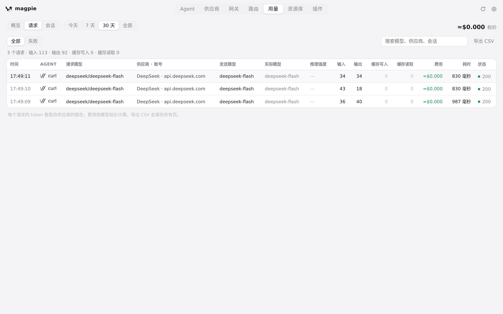
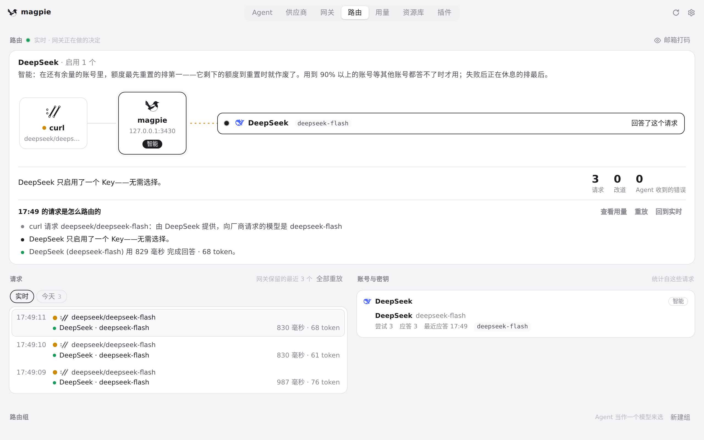
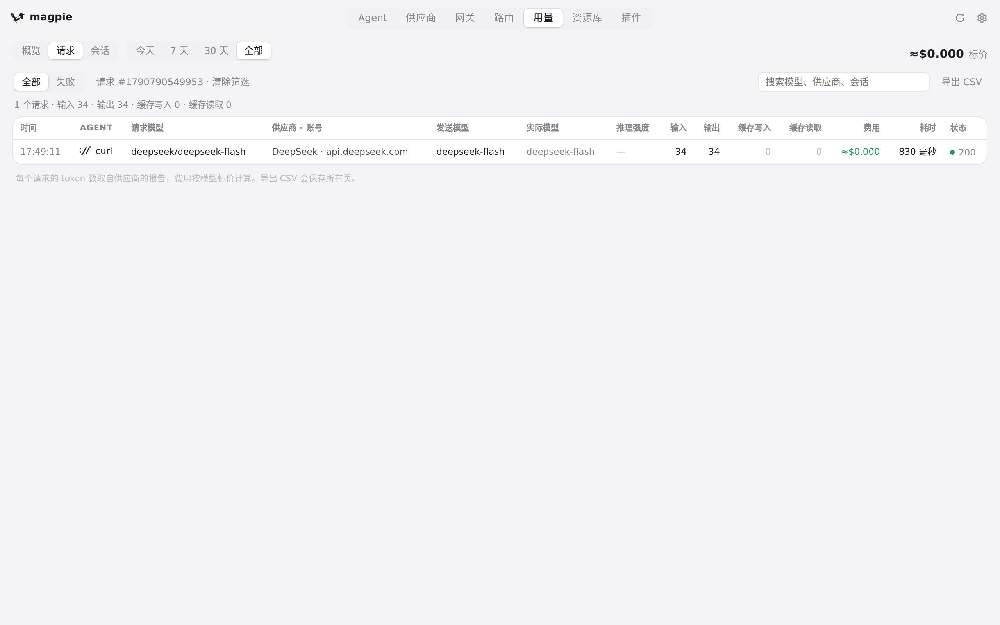
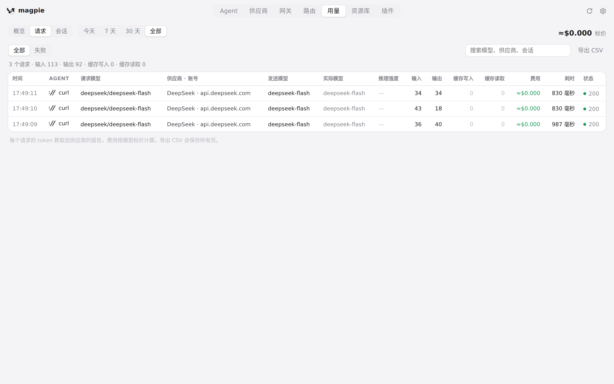

#361 界面预览
commit cdc9f8e · 回到 PR · 用量记录多了 route_id：用量页「请求」列表里带路由的那几条，时间变成可点按钮（悬停提示「查看路由」），点开直接跳到路由页看该请求的路由过程；路由页的请求说明栏多了「查看用量」，点一下回到按该路由筛选的用量列表，工具栏显示「请求 #… · 清除筛选」，点它清除筛选；CSV 导出也多了一列 route_id。
红线是鼠标走过的轨迹，红色圆环是一次点击；底部文字是这一步在做什么。空格暂停，← → 逐段查看。
用量 → 路由：点请求时间看这条请求怎么被路由 · 用量页的「请求」列表

用量 → 路由：点请求时间看这条请求怎么被路由 · 悬停请求时间时的样子

用量 → 路由：点请求时间看这条请求怎么被路由 · 路由页打开的这条请求的完整过程
路由 → 用量：从路由回看该路由的用量记录 · 路由页最近一个请求的说明栏

路由 → 用量：从路由回看该路由的用量记录 · 用量页：注意工具栏与记录列表

路由 → 用量：从路由回看该路由的用量记录 · 清除路由筛选后的用量列表